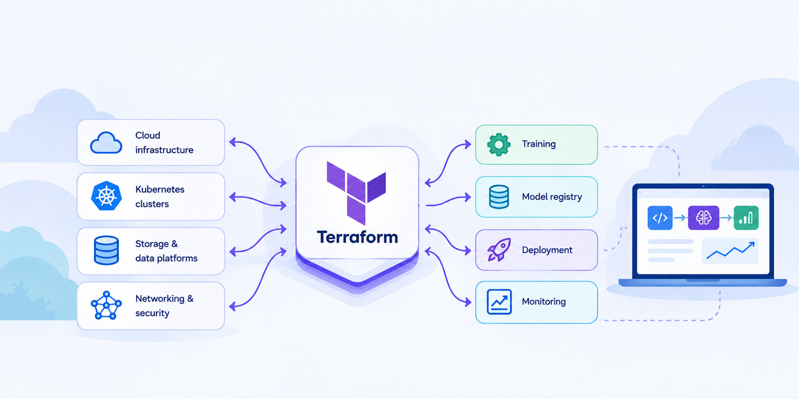
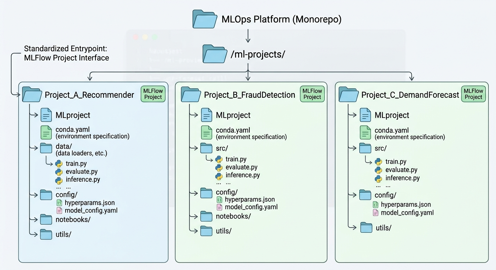
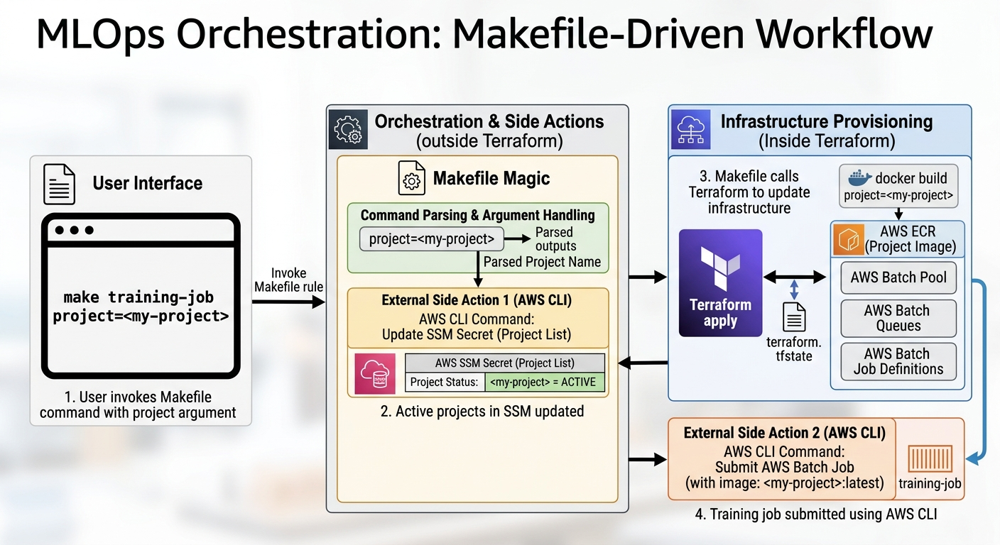

An MLOps command centre in Terraform

The typical ML pipeline’s lifecycle consists of model training, registration, deployment, monitoring and decommissioning. All of these steps are usually reflected as changes in infrastructure, if nothing else because they all usually run on the cloud: even if scale doesn’t force you to do this, legal constraints around data usually will.
On the other hand, Terraform is one the most popular tools for infrastructure-as-code, it helps Engineers track cloud infrastructure as versioned code. So it is worth asking whether Terraform could, by itself, function as a good MLOps command centre. But what would it look like, and is it a good idea?
I tinkered with this a few years back and went as far as a creating a minimal working prototype, on which most of this post is based. It wasn’t all frictionless, but overall it was surprisingly simple and self-contained. Although I haven’t deployed it in a real project, I reckon it could work well for some teams.
Throughout this post, I’ll assume for simplicity that AWS is the main cloud provider, so some familiarity with AWS services is assumed. Here is how I think it would work.
First design choice: MLOps monorepo
Because an MLOps platform can be managing multiple independent ML projects, we need a folder, say ml-projects, where each project has their own subfolder. For simplicity, let’s assume each of these subfolders implements the MLFlow Project interface so that it can be easily run by any orchestrator that sits on the layer above it, without any knowledge of its internals. But note any other simple entrypoint such as Makefile will also work.
This means each subfolder is a full-fledged ML project in its own right and contains its custom data loaders and transformers, the project’s configuration, and maybe even environment managers. Ultimately, this requires a monorepo as the central MLOps platform, where every deployed ML project is tracked and maintained. Different teams of Data Scientists work on their own project’s folder, while MLOps engineers work on the layer above, at the repo level.

While proofs of concept can be tracked in other repos, once a model is productionised it has to necessarily be migrated to this repo for centralised management. This will be particularly relevant when talking about lifecycle management.
Second design choice: MLFlow model registry
While Terraform can orchestrate, we still need a model registry, so MLFLow is a central part of this set up. AWS SageMaker offers a fully managed MLFlow server, but if you want to save some money you could also manage it through Terraform. For completeness, the image below shows the infra you would need to spin it up if you do the latter. Back then I wrote a small public Terraform module to do this, but there are probably much more up to date modules out there.

Operations
The operations in this system map neatly to Terraform modules that create the necessary infrastructure for running training or inference jobs. While there are certain actions that need to happen external to Terraform for tracking other state, the vast majority of the work here is done through terraform apply under the hood.
Terraform training job module
Training a model on the cloud typically involves containerising the model’s project (we are assuming an MLFlow Project, for simplicity’s sake) and launching a batch compute job with the resulting image. While hardware requirements might vary from project to project, at system level the design below is usually sufficient:
Creation of a dedicated project’s ECR
Creation and upload of the corresponding ML Project image to it
Creation of a batch compute environment in Fargate or EC2 (configurable), along with queues and task definitions
The subsequent submission of a batch job based on the created tasks definition
The end result would be a new MLFlow run containing the fitted model’s artifact. Note again that it is the responsability of the corresponding ML Project to load the data, fit the model and log it to the MLFLow server, though the latter’s URI can be passed by the orchestrator.

Tracking project versions
While Terraform can track the state of infrastructure, it cannot track the state of local files, not out of the box at least. But ideally, we want Terraform updates to pick up modifications to the repo’s ML folders, in which case, whenever a training job is run, a new image version needs to be uploaded and tagged as latest automatically; otherwise no new image should be built. This can be addressed by creating a Terraform local variable that maps ML folders to a hash signature, that way any code change would be picked up by Terraform. It can also orchestrate image build and upload by creating a null Docker build resource tied to the project hash.
Tracking active projects
Once we tie Terraform state to local ML folders we have to make a distinction between an ML folder and an active ML project. Imagine we decommission a specific ML project and need to destroy the training infrastructure. If the folder hash is the only reflection of the ML project in Terraform’s state, we would need to delete the folder in order to remove its infrastructure which is not ideal. A better solution is the creation of persistent cloud state for active ML projects. This can be achieved through a AWS Parameter Store (SSM) secret that is updated every time a project goes online or offline. Terraform would then look at it (as a data variable) when updating infrastructure.
Deployment and monitoring jobs module
For this post I’ll assume deployment means a live inference endpoint, but batch inference would also be possible, and even simpler. For live inference, the workflow would be as follows:
Create an ECR repo for the project’s containerised models
Containerise a specific model from the MLFlow Registry (this can happen locally) and upload it to its ECR
Create an AWS SageMaker endpoint where the model is to be deployed, and tie it to its container image
Create CloudWatch dashboards to track endpoint metrics, as well as model and data metrics

The deployment logic would check for active projects in SSM, and throw an error if the deployment job references a project which hasn’t been trained before.
Release and decomissioning
Model decomissioning would be as simple as destroying the infrastructure corresponding to a deployment, while model release would involve uploading a new image to ECR and redeploying, which can be fully managed by Terraform. Both operations are deeply tied to tracking model versions and active projects, discussed above.
Orchestration
While Terraform does the majority of the job in the set up above, there are other things that need to happen outside it, such as submitting training jobs (done through AWS CLI). A humble Makefile can sit on top of Terraform as the entrypoint for Engineers, keeping track of dependent tasks, and also taking care of these external side actions.
A little bit of Makefile magic goes a long way. For example, rules can be set up so that users pass information as named arguments, e.g. project=<project-name>. The end result is a minimalist but highly intuitive Makefile that can do MLOps based on commands like.
make training-job project=<project-name>which would then create the infra if necessary and submit the job, and analogously for deployment. Overall, the call stack would look like
A user invokes a make rule, e.g.
make training-job project=<my-project>The list of active projects in SSM is updated based on the referenced project.
terraform applyis calledA training job is submitted using the AWS CLI

GitOps for lifecycle management
Tracking project versions like suggested above introduces an error mode where uncomitted changes in an ML project can be deployed by accident. This could create headaches and hard-to-trace discrepancies. For this reason, ideally, operations are managed as GitHub Actions workflows, even if manually triggered, rather than launched from a work laptop.
Complexity grows
The system described above is sufficient for a small or medium team with basic MLOps requirements, but things can get more complicated once multiple ML projects are managed.
Project-specific infrastructure
As the number of managed projects grow, there will be a need for using project-specific configuration and hardware, e.g. provisioning GPUs for deep learning projects. This is easy to incorporate. In the working prototype, each project folder can have its own training-resource-requirements.json, which is passed directly as AWS Batch configuration when a pool is created.
This also creates the need to have a default configuration, which can be incorporated in the training job’s module itself.
More sophisticated monitoring needs
Monitoring in this set up is limited to off-the-shelf SageMaker endpoint monitoring, which includes hardware-level metrics such as IO ops, memory usage, latency, etc. The project also allows data capture during inference, so the endpoint can also be configured to compute feature drift metrics periodically. However, teams could require more bespoke monitoring with custom metrics, or integration with existing monitoring tools.
Shadow deployments
At the time of writing the prototype, AWS SageMaker endpoints supported shadow deployment only through a specific configuration set-up which points to an S3 artifact or a model’s image. Currently, the working prototype does not support shadow deployments out of the box. Configuring one would be a manual operation, and although straightforward, this raises a set of extra CLI requirements for specifying an optional shadow model as part of a deployment, updating an existing deployment to include or remove a shadow variant, and so on.
Terraform bugs
Terraform is not bug-free, and sometimes update operations will fail through no fault of the user. In practice this required a few scripts that are run at strategic points of the ML lifecycle to safeguard against odd Terraform behaviour.
Pros and cons
Personally I really like this set up. It is minimalist and yet can get a lot done, while giving Data Scientists full freedom to structure their projects as they see fit, as long as they implement an agreed upon entrypoint. It also gives MLOps engineer a centralised control plane for all ML projects.
On the other hand, whether this system is a good fit depends a lot on the team’s particular needs. For teams without dedicated MLE or MLOps Engineers, expecting Data Scientists to manage Terraform projects might be pushing it, and for companies with legacy infrastructure footprints where ML needs to be integrated, managing the interactions between ML and non-ML infrastructure could prove difficult.